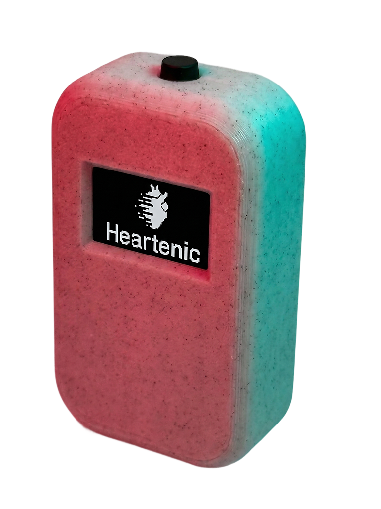

Es un guía físico de respiración y meditación. Te acompaña con una pequeña pantalla que indica el ritmo y un motor de vibración que te lo hace sentir.
Es físico, tangible y 100% enfocado.
Diseñado para ser increíblemente sencillo y natural de usar. Sin apps. Sin notificaciones. Solo tú y tu respiración. Con forma ergonómica y compacta, lo puedes llevar en la bolsa o en la mano.
No es un gadget más, es una invitación a la calma. Su diseño es intencionalmente minimalista, eliminando cualquier barrera entre el usuario y la práctica de la meditación. Un solo botón es todo lo que se necesita, evitando distracciones y decisiones innecesarias.
| Característica | Detalle Técnico |
|---|---|
| Microcontrolador | ESP32-C3 / ESP32-C6 |
| Pantalla | OLED 0.96" (128x64 px) |
| Botón | Un único pulsador táctil |
| Vibración | Motor de vibración interno |
| Batería | LiPo 3.7V |
| Cuerpo | Impreso en 3D |
El Meditador de Bolsillo no es solo una idea: es un dispositivo funcional, probado y con un alto nivel de desarrollo técnico. Está prácticamente listo para ser producido a pequeña escala. Uno de los objetivos de Heartenic es llevarlo a manos de personas que lo necesiten. Estamos trabajando para que muy pronto puedas comprar el tuyo.
Al mismo tiempo, también creemos que este proyecto le pertenece a todos. Por eso, aunque estemos trabajando en una versión comercial, liberamos el diseño y el código como open source. No solo para que puedas ver cómo está hecho, sino para que puedas adaptarlo, mejorarlo o incluso construir tu propia versión. Esto no es solo un producto; es una invitación a co-crear tecnología más humana.
Descargar Documentación